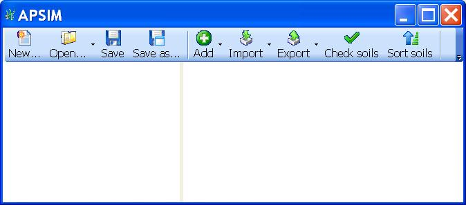
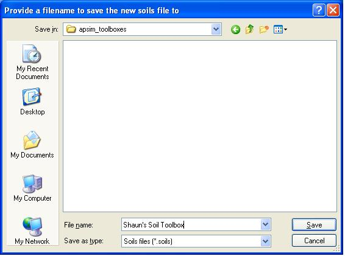
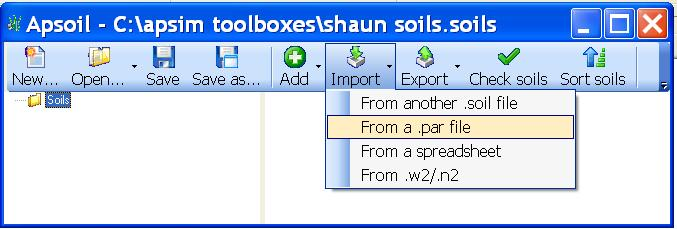
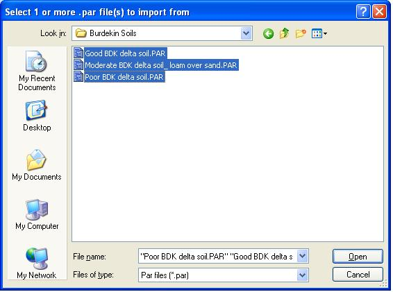
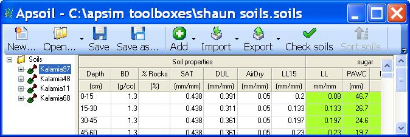

Users of past versions of APSIM may have soils in a .par file that they may whish to use in the latest version of APSIM.
The best way to use these old soils in the new version of APSIM is to add them as a toolbox. To do this you need to convert the .par file containing the soils into a .soils file and then add the .soils as a toolbox.
To convert the .par file into a .soils file, you need to use another product that comes with apsim called Apsoil
To open it, click on the Apsim icon on your desktop, then choose Apsoil.
Click OK when the introduction screen comes up.
In the window that appears, click New...

Save the new .soils file to anywhere you like but preferably the same folder that you have saved any previous toolboxes to. Choose an appropriate filename but also preferably a short one as this is the name that will be used for your toolbox when you add it to ApsimUI later. Click
Save

Now click the Import button on the toolbar at the top of the window, and choose From a .par file

Now you can browse to your folder that contains the .par file with the soils. (nb. if there is more then one .par file in the folder that contains soils that you wish to add, you can use the "Shift" key to select multiple .par files)

You will now see a Soils folder added to the tree pane. You can expand the tree and click on the soils to see if they were imported sucessfully. The table is fully editable so you can change any values in it just by clicking on the cell and typing in a new value.

You can import more soils from other .par files to this .soils file by repeating the previous steps.
You can check to see if the soil or soils you have imported are correct by selecting the soil or the root node in the tree and then clicking on the Check Soils button on the toolbar.
Once you are satisfied that you have all the soils you want added to the .soils file. You can then close Apsoil.
Now that you have created your .soils file with all your soils in it, it is a simple matter of adding the .soils file as a toolbox in APSIM. See Create your own or Add somone else's toolbox to see how to do this.